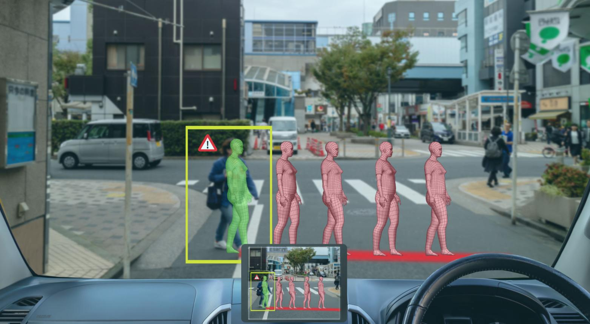
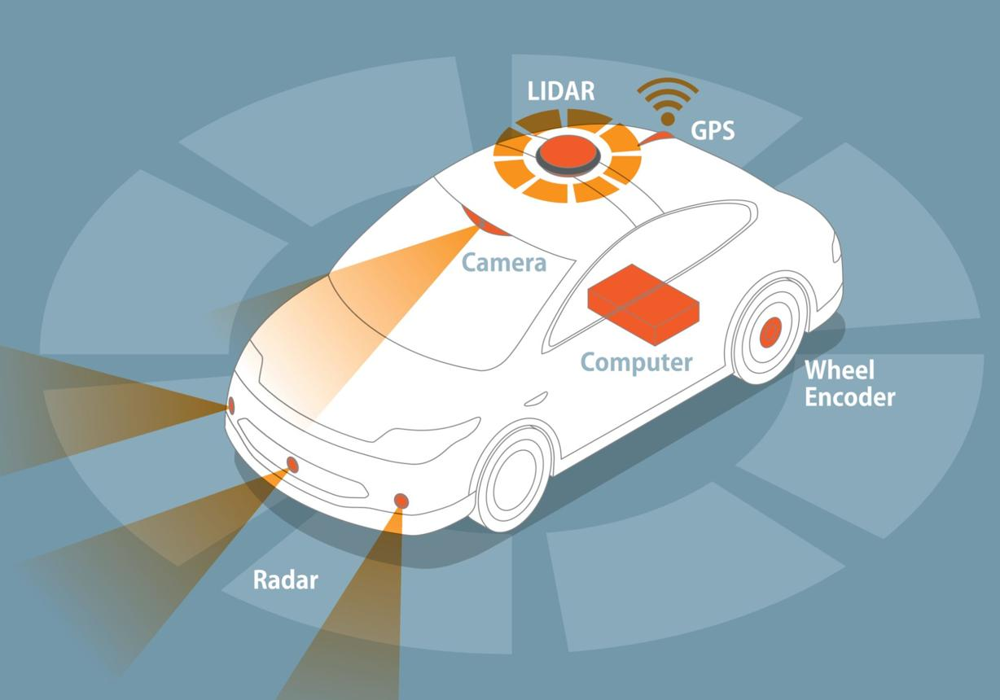
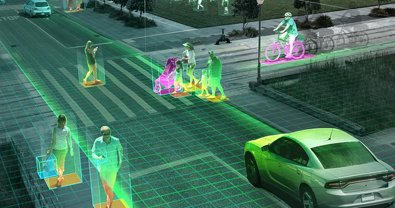
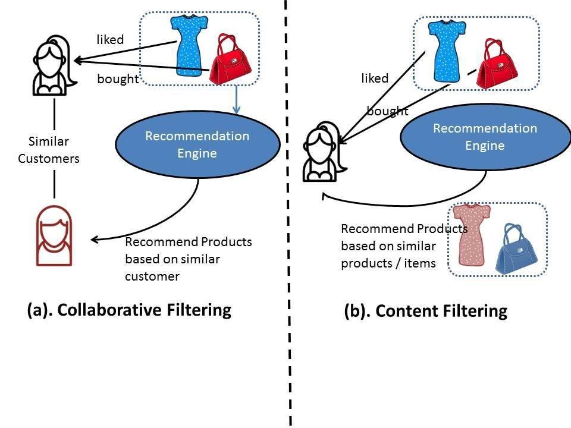
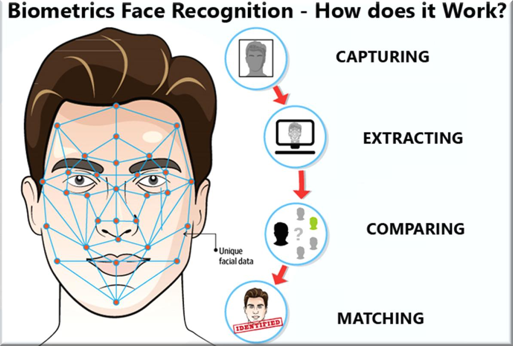

AI Engineering – 4 weeks
Build, train, fine-tune, and deploy AI models and AI-powered applications
AI Engineering – Week 1
Day – 1: Introduction to Artificial Intelligence (AI):
Learning Objectives
By the end of this session, students will be able to:

1. What is Artificial Intelligence?
Artificial Intelligence (AI) is a branch of computer science that focuses on creating machines and software capable of performing tasks that normally require human intelligence. These tasks include learning from experience, understanding language, recognizing images, making decisions, solving problems, and even generating creative content.
Traditionally, computers only followed instructions written by programmers. If a programmer forgot to include a rule, the computer would fail. AI changes this approach by allowing systems to learn patterns from data and improve their performance over time without being explicitly programmed for every possible situation.
Think about a child learning to identify cats and dogs. Instead of memorizing a list of rules, the child observes many examples and gradually learns the differences. AI systems learn in a similar way by analyzing large amounts of data and identifying patterns.
Example
Suppose you want a computer to identify whether an image contains a cat.
Traditional Programming:
This approach becomes difficult because every cat looks different.
Artificial Intelligence:
This ability to learn from examples is one of the most important characteristics of AI.
2. Why is AI Important?
AI is transforming almost every industry because it can process huge amounts of information much faster than humans.
Organizations use AI to:
Today, AI powers many technologies that people use every day, often without realizing it.
Example
When you search for a product online, AI analyzes your behavior and recommends similar products that you may want to purchase.
When you watch videos on YouTube, AI predicts which videos you are most likely to enjoy based on your viewing history.
3. Applications of Artificial Intelligence
3.1 AI Assistants and Chatbots
5
AI assistants such as ChatGPT can understand natural language, answer questions, generate code, write articles, summarize documents, and assist users in various tasks.
Example
A student asks:
"Explain machine learning in simple terms."
The AI understands the request and generates a detailed explanation instantly.
Industries Using AI Assistants
3.2 Self-Driving Cars


5
Self-driving vehicles use AI to understand their surroundings and make driving decisions.
The vehicle continuously processes information from:
The AI system identifies:
and decides how the car should move safely.
Example
When a pedestrian suddenly crosses the road, the AI detects the obstacle and applies the brakes automatically.
3.3 Recommendation Systems
Recommendation systems suggest products, movies, songs, or content based on user preferences.
Examples
These systems analyze:
Real-World Scenario
If you watch several videos about web development, YouTube's AI learns your interests and recommends more programming-related content.
3.4 Face Recognition
Face recognition systems use computer vision and deep learning to identify individuals from images or videos.
Applications
Example
When you unlock your phone using Face ID, AI compares your face with the stored facial data and verifies your identity within seconds.
3.5 Medical Diagnosis
5
Healthcare organizations use AI to assist doctors in diagnosing diseases more accurately and quickly.
AI can analyze:
Example
An AI system can examine thousands of medical images and detect signs of cancer that may be difficult for humans to identify early.
Benefits
3.6 Fraud Detection
Banks and financial institutions use AI to detect unusual activities and prevent fraud.
Example
Suppose your bank account normally makes purchases in Chennai.
Suddenly, a large transaction is attempted from another country.
The AI system identifies this as suspicious and may:
This helps protect customers from financial fraud.
4. Types of Artificial Intelligence
Narrow AI (Weak AI)


5
Narrow AI is designed to perform specific tasks.
It excels at one job but cannot perform tasks outside its training.
Examples
Characteristics
General AI (Strong AI)
General AI refers to machines that can perform any intellectual task that a human can perform.
Such systems would be capable of:
Current Status
General AI does not yet exist.
It remains a major research goal in the AI community.
Example
Imagine a robot that can:
without requiring separate programming for each task.
That would be General AI.
Super AI
Super AI is a hypothetical form of intelligence that surpasses human intelligence in every area.
It would outperform humans in:
Current Status
Super AI is purely theoretical and does not exist today.
It is commonly discussed in research, ethics, and science fiction.
Comparison of AI Types
Feature | Narrow AI | General AI | Super AI |
|---|---|---|---|
Exists Today | Yes | No | No |
Task Specific | Yes | No | No |
Human-Level Intelligence | No | Yes | Beyond Human |
Example | ChatGPT | Not Yet Created | Theoretical |
Practical Activity
Activity: Identify AI Around You
Create a table containing 10 AI-powered applications that you use daily.
Application | AI Feature |
|---|---|
YouTube | Video Recommendation |
Google Maps | Route Optimization |
ChatGPT | Conversational AI |
Assessment
Part A – Multiple Choice Questions
1. What is the primary goal of Artificial Intelligence?
a) Store data efficiently
b) Simulate human intelligence
c) Increase internet speed
d) Improve computer hardware
Answer: b
2. Which of the following is an example of Narrow AI?
a) Human Brain
b) Super AI
c) ChatGPT
d) General AI
Answer: c
3. Which industry uses AI for fraud detection?
a) Agriculture
b) Banking
c) Construction
d) Manufacturing
Answer: b
4. Face Unlock in smartphones uses:
a) Blockchain
b) Cloud Computing
c) Face Recognition
d) Networking
Answer: c
5. Which type of AI currently does not exist?
a) Narrow AI
b) Recommendation AI
c) General AI
d) Chatbots
Answer: c